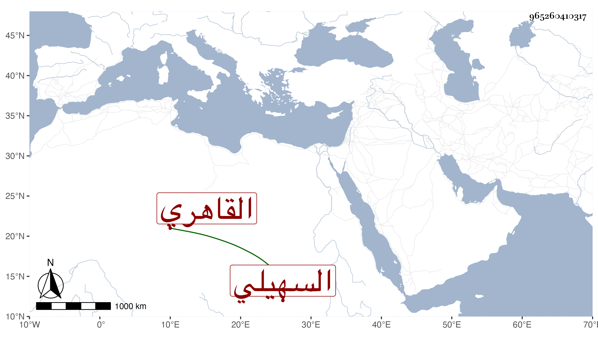

0902Sakhawi.DawLamic.ITO20230111-ara1.EIS1600.965260410317
Biography ID: 965260410317
458
محمد بن علي بن زكريا الشمس السهيلي الأصل القاهري الماضي أبوه . نشأ فاشتغل وحفظ القرآن وقرأ في الجوق وجود الكتابة على علي بن محمد مشيمش والجمال الهيتي وتميز في النسخ وغيره وكتب كثيرا وكذا في التذهيب وغسل اللازورد ومما كتبه للدوادار يشبك تفسير الفخر الرازي في مجلد أتلف فيه شيئا كثيرا . ورغب عن بعض وظائفه وباع جميع أملاكه وما تخلف له عن أبيه وهو شيء كثير فيما لا طائل تحته كما هي سنة الله غالبا في المال الموروث من زائدي الحرص مع مزيد سماح هذا به ثم قرره الاستادار في تربة الدوادار يشبك وأقام بها متقنعا بمعلومها وكان باسمه بقلعة الجبل طبقة من طباق القاعة فكان بها من المماليك يودعون عنده ما يتحصل لهم بحيث اجتمع عنده نحو ألفي دينار أنفد غالبها ، وآل أمره إلى أن اختفى وأمسك ولده محمد فأودع السجن مدة طويلة وانقطع خبر أبيه
